资源
课程
Lecture 01 Overview of Computer Graphics
What is Computer Graphics？图形学的应用：
Why study Computer Graphics？
Computer Graphics is AWESOME！
Course Topics（mainly 4 parts）
计算机图形学、计算机视觉、数字图像处理的区别：
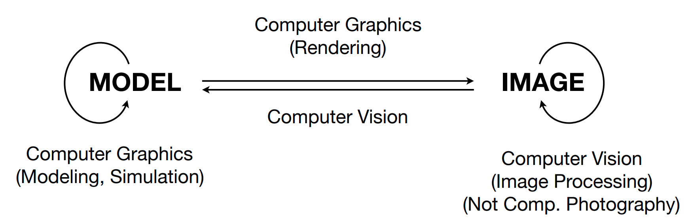
Lecture 02 Review of Linear Algebra
A Swift and Brutal Introduction to Linear Algebra! 一份对线性代数的迅速 且直接 的介绍！
Graphics’ Dependencies 图形相关的依赖项
This Course
More dependent on Linear Algebra 更多依赖于线性代数
Vectors (dot products, cross products, …) 向量（点积、叉积等）
Matrices (matrix-matrix, matrix-vector mult., …) 矩阵（矩阵相乘、矩阵与向量相乘等）
For example,
A point is a vector? 一个点是一个向量吗？
An operation like translating or rotating objects can be matrix-vector multiplication 类似平移或旋转物体的操作可以通过矩阵与向量相乘实现
Vectors
通常被写作 a ⃗ \vec{a} a ⃗
向量的长度被写作 ∣ ∣ a ⃗ ∣ ∣ \left|\left|\vec{a}\right|\right| ∣ ∣ a ⃗ ∣ ∣
向量的归一化，方向不变，长度设为 1：a ^ = a ⃗ / ∥ a ⃗ ∥ \hat{a}=\vec{a}/\|\vec{a}\| a ^ = a ⃗ / ∥ a ⃗ ∥
Cartesian Coordinates 笛卡尔坐标系
A = ( x y ) \mathbf{A}=\begin{pmatrix}x\\y\end{pmatrix}
A = ( x y )
A T = ( x , y ) \mathbf{A}^T=\left(x,y\right)
A T = ( x , y )
∣ ∣ A ∥ = x 2 + y 2 ||\mathbf{A}\|=\sqrt{x^2+y^2}
∣ ∣ A ∥ = √ x 2 + y 2
Dot (scalar) Product 向量点乘
a ⃗ ⋅ b ⃗ = ∥ a ⃗ ∥ ∥ b ⃗ ∥ cos θ \vec{a}\cdot\vec{b}=\|\vec{a}\|\|\vec{b}\|\cos\theta
a ⃗ ⋅ b ⃗ = ∥ a ⃗ ∥ ∥ b ⃗ ∥ cos θ
cos θ = a ⃗ ⋅ b ⃗ ∥ a ⃗ ∥ ∥ b ⃗ ∥ \begin{aligned}\cos\theta&=\frac{\vec a\cdot\vec b}{\|\vec a\|\|\vec b\|}\end{aligned}
cos θ = ∥ a ⃗ ∥ ∥ b ⃗ ∥ a ⃗ ⋅ b ⃗
对于 Unit Vectors 单位向量：
cos θ = a ^ ⋅ b ^ \cos\theta=\hat{a}\cdot\hat{b}
cos θ = a ^ ⋅ b ^
性质：
交换律：a ⃗ ⋅ b ⃗ = b ⃗ ⋅ a ⃗ \vec{a}\cdot\vec{b}=\vec{b}\cdot\vec{a} a ⃗ ⋅ b ⃗ = b ⃗ ⋅ a ⃗
分配律：a ⃗ ⋅ ( b ⃗ + c ⃗ ) = a ⃗ ⋅ b ⃗ + a ⃗ ⋅ c ⃗ \vec{a}\cdot(\vec{b}+\vec{c})=\vec{a}\cdot\vec{b}+\vec{a}\cdot\vec{c} a ⃗ ⋅ ( b ⃗ + c ⃗ ) = a ⃗ ⋅ b ⃗ + a ⃗ ⋅ c ⃗
结合律：( k a ⃗ ) ⋅ b ⃗ = a ⃗ ⋅ ( k b ⃗ ) = k ( a ⃗ ⋅ b ⃗ ) (k\vec{a})\cdot\vec{b}=\vec{a}\cdot(k\vec{b})=k(\vec{a}\cdot\vec{b}) ( k a ⃗ ) ⋅ b ⃗ = a ⃗ ⋅ ( k b ⃗ ) = k ( a ⃗ ⋅ b ⃗ )
Dot Product in Cartesian Coordinates 笛卡尔坐标系下的向量点乘
Component-wise multiplication, then adding up 分量逐个相乘，然后求和
In 2D
a ⃗ ⋅ b ⃗ = ( x a y a ) ⋅ ( x b y b ) = x a x b + y a y b \vec{a}\cdot\vec{b}=\begin{pmatrix}x_a\\y_a\end{pmatrix}\cdot\begin{pmatrix}x_b\\y_b\end{pmatrix}=x_ax_b+y_ay_b a ⃗ ⋅ b ⃗ = ( x a y a ) ⋅ ( x b y b ) = x a x b + y a y b
In 3D
a ⃗ ⋅ b ⃗ = ( x a y a z a ) ⋅ ( x b y b z b ) = x a x b + y a y b + z a z b \vec a\cdot\vec b=\begin{pmatrix}x_a\\y_a\\z_a\end{pmatrix}\cdot\begin{pmatrix}x_b\\y_b\\z_b\end{pmatrix}=x_ax_b+y_ay_b+z_az_b a ⃗ ⋅ b ⃗ = ⎝ ⎛ x a y a z a ⎠ ⎞ ⋅ ⎝ ⎛ x b y b z b ⎠ ⎞ = x a x b + y a y b + z a z b
Dot Product in Graphics 向量点乘在图形学中的应用
Find angle between two vectors (e.g. cosine of angle between light source and surface) 寻找两个向量之间的夹角，例如光源和表面之间的夹角的余弦值。
Finding projection of one vector on another 找到一个向量在另一个向量上的投影。
b ⃗ ⊥ \vec{b}_{\perp} b ⃗ ⊥ b ⃗ \vec{b} b ⃗ a ⃗ \vec{a} a ⃗
b ⃗ ⊥ \vec{b}_{\perp} b ⃗ ⊥ a ⃗ \vec{a} a ⃗ a ^ \hat{a} a ^
$\vec{b}{\perp}=k\hat{a}, k=|\vec{b} \perp|=|\vec{b}|\cos\theta $
Measure how close two directions are 测量两个方向之间的接近程度
Decompose a vector 分解一个向量
Determine forward / backward 确定正向/反向
Cross (vector) Product 矢量积
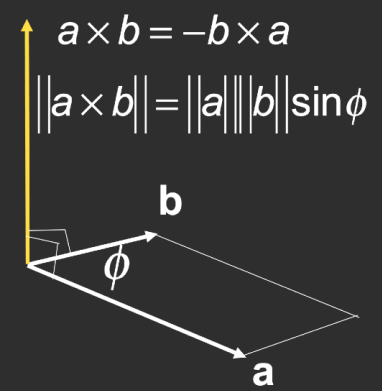
Cross product is orthogonal to two initial vectors 叉乘结果与两个初始向量垂直
Direction determined by right-hand rule 方向由右手定则确定
Useful in constructing coordinate systems (later) 在构建坐标系时非常有用
性质：
对于右手坐标系：
x ⃗ × y ⃗ = + z ⃗ \vec{x}\times\vec{y}=+\vec{z}
x ⃗ × y ⃗ = + z ⃗
y ⃗ × x ⃗ = − z ⃗ \vec{y}\times\vec{x}=-\vec{z}
y ⃗ × x ⃗ = − z ⃗
y ⃗ × z ⃗ = + x ⃗ \vec{y}\times\vec{z}=+\vec{x}
y ⃗ × z ⃗ = + x ⃗
z ⃗ × y ⃗ = − x ⃗ \vec{z}\times\vec{y}=-\vec{x}
z ⃗ × y ⃗ = − x ⃗
z ⃗ × x ⃗ = + y ⃗ \vec{z}\times\vec{x}=+\vec{y}
z ⃗ × x ⃗ = + y ⃗
x ⃗ × z ⃗ = − y ⃗ \vec{x}\times\vec{z}=-\vec{y}
x ⃗ × z ⃗ = − y ⃗
不满足交换律：a ⃗ × b ⃗ = − b ⃗ × a ⃗ \vec{a}\times\vec{b}=-\vec{b}\times\vec{a} a ⃗ × b ⃗ = − b ⃗ × a ⃗
跟自身叉乘为零向量：a ⃗ × a ⃗ = 0 ⃗ \vec{a}\times\vec{a}=\vec{0} a ⃗ × a ⃗ = 0 ⃗
满足分配律：
a ⃗ × ( b ⃗ + c ⃗ ) = a ⃗ × b ⃗ + a ⃗ × c ⃗ \vec{a}\times(\vec{b}+\vec{c})=\vec{a}\times\vec{b}+\vec{a}\times\vec{c} a ⃗ × ( b ⃗ + c ⃗ ) = a ⃗ × b ⃗ + a ⃗ × c ⃗
a ⃗ × ( k b ⃗ ) = k ( a ⃗ × b ⃗ ) \vec{a}\times(k\vec{b})=k(\vec{a}\times\vec{b}) a ⃗ × ( k b ⃗ ) = k ( a ⃗ × b ⃗ )
Cross Product: Cartesian Formula? 矢量积在笛卡尔坐标系中
a ⃗ × b ⃗ = ( y a z b − y b z a z a x b − x a z b x a y b − y a x b ) \vec{a}\times\vec{b}=\begin{pmatrix}y_az_b-y_bz_a\\z_ax_b-x_az_b\\x_ay_b-y_ax_b\end{pmatrix}
a ⃗ × b ⃗ = ⎝ ⎛ y a z b − y b z a z a x b − x a z b x a y b − y a x b ⎠ ⎞
a ⃗ × b ⃗ = A ∗ b = ( 0 − z a y a z a 0 − x a − y a x a 0 ) ( x b y b z b ) \vec a\times\vec b=A^*b=\begin{pmatrix}0&-z_a&y_a\\z_a&0&-x_a\\-y_a&x_a&0\end{pmatrix}\begin{pmatrix}x_b\\y_b\\z_b\end{pmatrix}
a ⃗ × b ⃗ = A ∗ b = ⎝ ⎛ 0 z a − y a − z a 0 x a y a − x a 0 ⎠ ⎞ ⎝ ⎛ x b y b z b ⎠ ⎞
A ∗ A^* A ∗ a ⃗ \vec{a} a ⃗ 伴随矩阵 - 维基百科，自由的百科全书 (wikipedia.org) ）
Cross Product in Graphics 矢量积在图形学中的应用
Determine left / right 判别左右
Determine inside / outside 判别内外
Orthonormal Bases / Coordinate Frames 正交基 / 坐标系
构建右手坐标系：
∥ u ⃗ ∥ = ∥ v ⃗ ∥ = ∥ w ⃗ ∥ = 1 \|\vec{u}\|=\|\vec{v}\|=\|\vec{w}\|=1
∥ u ⃗ ∥ = ∥ v ⃗ ∥ = ∥ w ⃗ ∥ = 1
u ⃗ ⋅ v ⃗ = v ⃗ ⋅ w ⃗ = u ⃗ ⋅ w ⃗ = 0 \vec{u}\cdot\vec{v}=\vec{v}\cdot\vec{w}=\vec{u}\cdot\vec{w}=0
u ⃗ ⋅ v ⃗ = v ⃗ ⋅ w ⃗ = u ⃗ ⋅ w ⃗ = 0
w ⃗ = u ⃗ × v ⃗ \vec{w}=\vec{u}\times\vec{v}
w ⃗ = u ⃗ × v ⃗
p ⃗ = ( p ⃗ ⋅ u ⃗ ) u ⃗ + ( p ⃗ ⋅ v ⃗ ) v ⃗ + ( p ⃗ ⋅ w ⃗ ) w ⃗ \vec p=(\vec p\cdot\vec u)\vec u+(\vec p\cdot\vec v)\vec v+(\vec p\cdot\vec w)\vec w
p ⃗ = ( p ⃗ ⋅ u ⃗ ) u ⃗ + ( p ⃗ ⋅ v ⃗ ) v ⃗ + ( p ⃗ ⋅ w ⃗ ) w ⃗
Matrix 矩阵
Matrix-Matrix Multiplication 矩阵乘法
一般不满足交换律（一般不满足 A B ≠ B A AB\ne BA A B ≠ B A
满足结合律和分配律：
( A B ) C = A ( B C ) (AB)C=A(BC) ( A B ) C = A ( B C ) A ( B + C ) = A B + A C A(B+C)=AB+AC A ( B + C ) = A B + A C ( A + B ) C = A C + B C (A+B)C=AC+BC ( A + B ) C = A C + B C
( A B ) T = B T A T (AB)^T=B^TA^T
( A B ) T = B T A T
Identity Matrix 单位矩阵
I 3 × 3 = ( 1 0 0 0 1 0 0 0 1 ) I_{3\times3}=\begin{pmatrix}1&0&0\\0&1&0\\0&0&1\end{pmatrix}
I 3 × 3 = ⎝ ⎛ 1 0 0 0 1 0 0 0 1 ⎠ ⎞
A A − 1 = A − 1 A = I AA^{-1}=A^{-1}A=I
A A − 1 = A − 1 A = I
( A B ) − 1 = B − 1 A − 1 (AB)^{-1}=B^{-1}A^{-1}
( A B ) − 1 = B − 1 A − 1
Vector multiplication in Matrix form 向量与矩阵相乘
a ⃗ ⋅ b ⃗ = a ⃗ T b ⃗ \vec{a}\cdot\vec{b}=\vec{a}^T\vec{b}
a ⃗ ⋅ b ⃗ = a ⃗ T b ⃗
= ( x a y a z a ) ( x b y b z b ) = ( x a x b + y a y b + z a z b ) =\begin{pmatrix}x_a&y_a&z_a\end{pmatrix}\begin{pmatrix}x_b\\y_b\\z_b\end{pmatrix}=\begin{pmatrix}x_ax_b+y_ay_b+z_az_b\end{pmatrix}
= ( x a y a z a ) ⎝ ⎛ x b y b z b ⎠ ⎞ = ( x a x b + y a y b + z a z b )
a ⃗ × b ⃗ = A ∗ b = ( 0 − z a y a z a 0 − x a − y a x a 0 ) ( x b y b z b ) \vec a\times\vec b=A^*b=\begin{pmatrix}0&-z_a&y_a\\z_a&0&-x_a\\-y_a&x_a&0\end{pmatrix}\begin{pmatrix}x_b\\y_b\\z_b\end{pmatrix}
a ⃗ × b ⃗ = A ∗ b = ⎝ ⎛ 0 z a − y a − z a 0 x a y a − x a 0 ⎠ ⎞ ⎝ ⎛ x b y b z b ⎠ ⎞
2D Transform 二维变换
Scale Transform 缩放
等比缩放：
x ′ = s x x^{\prime}=sx
x ′ = s x
y ′ = s x y^{\prime}=sx
y ′ = s x
用矩阵乘法表示：
[ x ′ y ′ ] = [ s 0 0 s ] [ x y ] \left.\left[\begin{array}{c}x'\\y'\end{array}\right.\right]=\left[\begin{array}{cc}s&0\\0&s\end{array}\right]\left[\begin{array}{c}x\\y\end{array}\right]
[ x ′ y ′ ] = [ s 0 0 s ] [ x y ]
Scale (Non-Uniform) 任意缩放
[ x ′ y ′ ] = [ s x 0 0 s y ] [ x y ] \begin{bmatrix}x'\\y'\end{bmatrix}=\begin{bmatrix}s_x&0\\0&s_y\end{bmatrix}\begin{bmatrix}x\\y\end{bmatrix}
[ x ′ y ′ ] = [ s x 0 0 s y ] [ x y ]
Reflection Matrix 镜像
Horizontal reflection 水平镜像：
x ′ = − x x^{\prime}=-x
x ′ = − x
y ′ = y y^{\prime}=y
y ′ = y
用矩阵乘法表示：
[ x ′ y ′ ] = [ − 1 0 0 1 ] [ x y ] \begin{bmatrix}x'\\y'\end{bmatrix}=\begin{bmatrix}-1&0\\0&1\end{bmatrix}\begin{bmatrix}x\\y\end{bmatrix}
[ x ′ y ′ ] = [ − 1 0 0 1 ] [ x y ]
Shear Matrix 斜切：
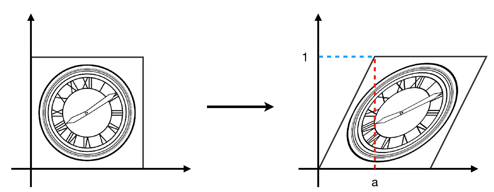
Hints:
Horizontal shift is 0 0 0 y = 0 y=0 y = 0
Horizontal shift is a a a y = 1 y=1 y = 1
Vertical shift is always 0 0 0
[ x ′ y ′ ] = [ 1 a 0 1 ] [ x y ] \begin{bmatrix}x'\\y'\end{bmatrix}=\begin{bmatrix}1&a\\0&1\end{bmatrix}\begin{bmatrix}x\\y\end{bmatrix}
[ x ′ y ′ ] = [ 1 0 a 1 ] [ x y ]
Rotation Matrix 旋转
R θ = [ cos θ − sin θ sin θ cos θ ] \mathbf{R}_\theta=\begin{bmatrix}\cos\theta&-\sin\theta\\\sin\theta&\cos\theta\end{bmatrix}
R θ = [ cos θ sin θ − sin θ cos θ ]
旋转相反的角等于矩阵的逆，等于矩阵的转置：
旋转矩阵是正交矩阵 。
R − θ = R θ − 1 = R θ T \mathbf{R}_{-\theta}=\mathbf{R}_\theta^{-1}=\mathbf{R}_{\theta}^T
R − θ = R θ − 1 = R θ T
Linear Transforms = Matrices 线性变换 = 矩阵
x ′ = a x + b y x^{\prime}=ax+by
x ′ = a x + b y
y ′ = c x + d y y^{\prime}=cx+dy
y ′ = c x + d y
[ x ′ y ′ ] = [ a b c d ] [ x y ] \left.\left[\begin{array}{c}x'\\y'\end{array}\right.\right]=\left[\begin{array}{cc}a&b\\c&d\end{array}\right]\left[\begin{array}{c}x\\y\end{array}\right]
[ x ′ y ′ ] = [ a c b d ] [ x y ]
简写为：
x ′ = M x \mathbf{x}^{\prime}=\mathbf{M}\mathbf{x}
x ′ = M x
Translation 平移
x ′ = x + t x x^{\prime}=x+t_x
x ′ = x + t x
y ′ = y + t y y^{\prime}=y+t_y
y ′ = y + t y
Why Homogeneous Coordinates 为什么引入齐次坐标
Translation cannot be represented in matrix form 平移变换不能用矩阵来表示
[ x ′ y ′ ] = [ a b c d ] [ x y ] + [ t x t y ] \begin{bmatrix}x'\\y'\end{bmatrix}=\begin{bmatrix}a&b\\c&d\end{bmatrix}\begin{bmatrix}x\\y\end{bmatrix}+\begin{bmatrix}t_x\\t_y\end{bmatrix}
[ x ′ y ′ ] = [ a c b d ] [ x y ] + [ t x t y ]
因此，平移变换不是线性变换！
Solution: Homogenous Coordinates 解决办法：齐次坐标
Add a third coordinate (w-coordinate) 增加一个维度
2D point = ( x , y , 1 ) T (x, y, {\color{Red}1})^T ( x , y , 1 ) T
2D vector = ( x , y , 0 ) T (x, y, {\color{Red}0})^T ( x , y , 0 ) T
Matrix representation of translations 用矩阵描述所有变换
( x ′ y ′ w ′ ) = ( 1 0 t x 0 1 t y 0 0 1 ) ⋅ ( x y 1 ) = ( x + t x y + t y 1 ) \begin{pmatrix}x'\\y'\\w'\end{pmatrix}=\begin{pmatrix}1&0&t_x\\0&1&t_y\\0&0&1\end{pmatrix}\cdot\begin{pmatrix}x\\y\\1\end{pmatrix}=\begin{pmatrix}x+t_x\\y+t_y\\1\end{pmatrix}
⎝ ⎛ x ′ y ′ w ′ ⎠ ⎞ = ⎝ ⎛ 1 0 0 0 1 0 t x t y 1 ⎠ ⎞ ⋅ ⎝ ⎛ x y 1 ⎠ ⎞ = ⎝ ⎛ x + t x y + t y 1 ⎠ ⎞
Valid operation if w-coordinate of result is 1 or 0 所增加维度的值不是 1 就是 0，这是因为：
vector + vector = vector
point – point = vector
point + vector = point
point + point = 它们的中点
因此定义，在齐次坐标中：
( x y w ) i s t h e 2 D p o i n t ( x / w y / w 1 ) , w ≠ 0 \begin{pmatrix}x\\y\\w\end{pmatrix}\text{ is the 2D point }\begin{pmatrix}x/w\\y/w\\1\end{pmatrix},w\neq0
⎝ ⎛ x y w ⎠ ⎞ i s t h e 2 D p o i n t ⎝ ⎛ x / w y / w 1 ⎠ ⎞ , w ≠ 0
Affine Transformation 仿射变换
Affine map = linear map + translation 仿射变换 = 线性变换 + 平移
( x ′ y ′ ) = ( a b c d ) ⋅ ( x y ) + ( t x t y ) \begin{pmatrix}x^{\prime}\\y^{\prime}\end{pmatrix}~=~\begin{pmatrix}a&b\\c&d\end{pmatrix}\cdot\begin{pmatrix}x\\y\end{pmatrix}+\begin{pmatrix}t_x\\t_y\end{pmatrix}
( x ′ y ′ ) = ( a c b d ) ⋅ ( x y ) + ( t x t y )
Using homogenous coordinates: 使用齐次坐标
( x ′ y ′ 1 ) = ( a b t x c d t y 0 0 1 ) ⋅ ( x y 1 ) \begin{pmatrix}x'\\y'\\1\end{pmatrix}=\begin{pmatrix}a&b&t_x\\c&d&t_y\\0&0&1\end{pmatrix}\cdot\begin{pmatrix}x\\y\\1\end{pmatrix}
⎝ ⎛ x ′ y ′ 1 ⎠ ⎞ = ⎝ ⎛ a c 0 b d 0 t x t y 1 ⎠ ⎞ ⋅ ⎝ ⎛ x y 1 ⎠ ⎞
2D Transformations 2D 变换
Scale 缩放
S ( s x , s y ) = ( s x 0 0 0 s y 0 0 0 1 ) \mathbf{S}(s_x,s_y)~=~\begin{pmatrix}s_x&0&0\\0&s_y&0\\0&0&1\end{pmatrix}
S ( s x , s y ) = ⎝ ⎛ s x 0 0 0 s y 0 0 0 1 ⎠ ⎞
Rotation 旋转
R ( α ) = ( cos α − sin α 0 sin α cos α 0 0 0 1 ) \mathbf{R}(\alpha)=\begin{pmatrix}\cos\alpha&-\sin\alpha&0\\\sin\alpha&\cos\alpha&0\\0&0&1\end{pmatrix}
R ( α ) = ⎝ ⎛ cos α sin α 0 − sin α cos α 0 0 0 1 ⎠ ⎞
Translation 平移
T ( t x , t y ) = ( 1 0 t x 0 1 t y 0 0 1 ) \mathbf{T}(t_x,t_y)=\begin{pmatrix}1&0&t_x\\0&1&t_y\\0&0&1\end{pmatrix}
T ( t x , t y ) = ⎝ ⎛ 1 0 0 0 1 0 t x t y 1 ⎠ ⎞
Inverse Transform 逆变换
M − 1 \mathbf{M^{-1}}
M − 1
Composing Transforms 复合变换
Sequence of affine transforms A 1 , A 2 , A 3 , . . . A_1, A_2, A_3, ... A 1 , A 2 , A 3 , . . . A 1 , A 2 , A 3 , . . . A_1, A_2, A_3, ... A 1 , A 2 , A 3 , . . .
Compose by matrix multiplication 通过矩阵乘法进行合成
Very important for performance! 对性能非常重要！
A n ( … A 2 ( A 1 ( x ) ) ) = A n ⋯ A 2 ⋅ A 1 ⋅ ( x y 1 ) A_n(\ldots A_2(A_1(\mathbf{x})))=\mathbf{A}_n\cdots\mathbf{A}_2\cdot\mathbf{A}_1\cdot\begin{pmatrix}x\\y\\1\end{pmatrix}
A n ( … A 2 ( A 1 ( x ) ) ) = A n ⋯ A 2 ⋅ A 1 ⋅ ⎝ ⎛ x y 1 ⎠ ⎞
预乘 n n n
Decomposing Complex Transforms 分解复合变换
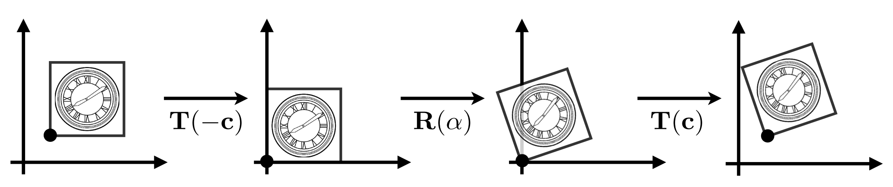
How to rotate around a given point c c c c c c
Translate center to origin 平移回原点
Rotate 旋转
Translate back 平移回去
T ( c ) ⋅ R ( α ) ⋅ T ( − c ) \mathbf{T(c)}\cdot\mathbf{R(\alpha)}\cdot\mathbf{T(-c)}
T ( c ) ⋅ R ( α ) ⋅ T ( − c )
3D Transforms
Use homogeneous coordinates again 再次使用齐次坐标:
3D point = ( x , y , z , 1 ) T (x, y, z, {\color{Red}1})^T ( x , y , z , 1 ) T
3D vector = ( x , y , z , 0 ) T (x, y, z, {\color{Red}0})^T ( x , y , z , 0 ) T
In general, ( x , y , z , w ) ( w ≠ 0 ) (x, y, z, w) (w \ne 0) ( x , y , z , w ) ( w ≠ 0 )
( x / w , y / w , z / w ) (x/w, y/w, z/w)
( x / w , y / w , z / w )
3D Transformations 3D 变换
Use 4 × 4 4\times 4 4 × 4 4 × 4 4\times 4 4 × 4
( x ′ y ′ z ′ 1 ) = ( a b c t x d e f t y g h i t z 0 0 0 1 ) ⋅ ( x y z 1 ) \begin{pmatrix}x'\\y'\\z'\\1\end{pmatrix}=\begin{pmatrix}a&b&c&t_x\\d&e&f&t_y\\g&h&i&t_z\\0&0&0&1\end{pmatrix}\cdot\begin{pmatrix}x\\y\\z\\1\end{pmatrix}
⎝ ⎜ ⎜ ⎛ x ′ y ′ z ′ 1 ⎠ ⎟ ⎟ ⎞ = ⎝ ⎜ ⎜ ⎛ a d g 0 b e h 0 c f i 0 t x t y t z 1 ⎠ ⎟ ⎟ ⎞ ⋅ ⎝ ⎜ ⎜ ⎛ x y z 1 ⎠ ⎟ ⎟ ⎞
先应用线性变换，再平移。
Viewing (观测) transformation
View (视图) / Camera transformation
Projection (投影) transformation
Orthographic (正交) projection
Perspective (透视) projection
3D Transformations 3D 变换
Rotation around x x x y y y z z z x x x y y y z z z
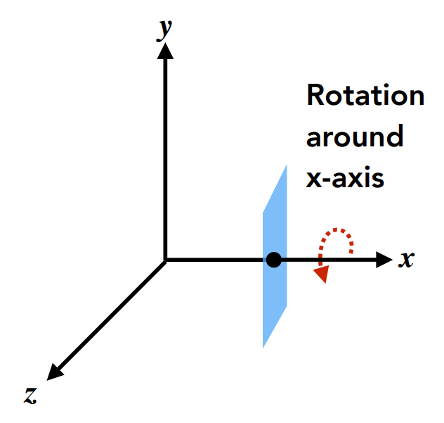
R x ( α ) = ( 1 0 0 0 0 cos α − sin α 0 0 sin α cos α 0 0 0 0 1 ) \mathbf{R}_x(\alpha)=\begin{pmatrix}1&0&0&0\\0&\cos\alpha&-\sin\alpha&0\\0&\sin\alpha&\cos\alpha&0\\0&0&0&1\end{pmatrix}
R x ( α ) = ⎝ ⎜ ⎜ ⎛ 1 0 0 0 0 cos α sin α 0 0 − sin α cos α 0 0 0 0 1 ⎠ ⎟ ⎟ ⎞
R y ( α ) = ( cos α 0 sin α 0 0 1 0 0 − sin α 0 cos α 0 0 0 0 1 ) \mathbf{R}_y(\alpha)=\begin{pmatrix}\cos\alpha&0&\sin\alpha&0\\0&1&0&0\\-\sin\alpha&0&\cos\alpha&0\\0&0&0&1\end{pmatrix}
R y ( α ) = ⎝ ⎜ ⎜ ⎛ cos α 0 − sin α 0 0 1 0 0 sin α 0 cos α 0 0 0 0 1 ⎠ ⎟ ⎟ ⎞
R z ( α ) = ( cos α − sin α 0 0 sin α cos α 0 0 0 0 1 0 0 0 0 1 ) \mathbf{R}_z(\alpha)=\begin{pmatrix}\cos\alpha&-\sin\alpha&0&0\\\sin\alpha&\cos\alpha&0&0\\0&0&1&0\\0&0&0&1\end{pmatrix}
R z ( α ) = ⎝ ⎜ ⎜ ⎛ cos α sin α 0 0 − sin α cos α 0 0 0 0 1 0 0 0 0 1 ⎠ ⎟ ⎟ ⎞
Compose any 3D rotation from R x \mathbf{R}_x R x R y \mathbf{R}_y R y R z \mathbf{R}_z R z R x \mathbf{R}_x R x R y \mathbf{R}_y R y R z \mathbf{R}_z R z
R x y z ( α , β , γ ) = R x ( α ) R y ( β ) R z ( γ ) \mathbf{R}_{xyz}(\alpha,\beta,\gamma)~=~\mathbf{R}_x(\alpha)\mathbf{R}_y(\beta)\mathbf{R}_z(\gamma)
R x y z ( α , β , γ ) = R x ( α ) R y ( β ) R z ( γ )
So-called Euler angles 所谓的欧拉角
Often used in flight simulators: roll, pitch, yaw 常用于飞行模拟器：滚转、俯仰、偏航
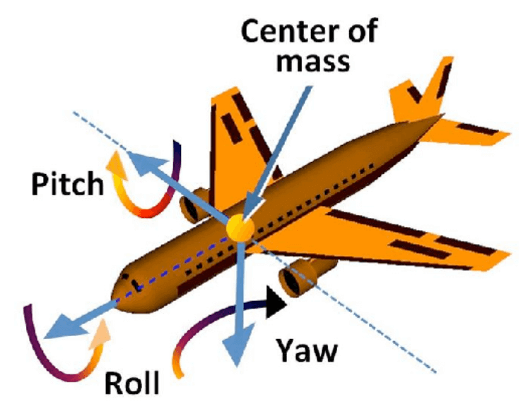
Rodrigues’ Rotation Formula 罗德里格斯轮换公式
绕轴 n ( n x , n y , n z ) n(n_x,n_y, n_z) n ( n x , n y , n z ) α \alpha α
\mathbf{R}(\mathbf{n},\alpha)=\cos(\alpha)\mathbf{I}+(1-\cos(\alpha))\mathbf{n}\mathbf{n}^T+\sin(\alpha)\underbrace{\begin{pmatrix}0&-n_z&n_y\\n_z&0&-n_x\\-n_y&n_x&0\end{pmatrix}}_{\mathbf{N}}
View / Camera Transformation 视图变换
What is view transformation? 什么是视图变换？
Think about how to take a photo 考虑拍照
Find a good place and arrange people (model transformation) 摆好场景：模型变换
Find a good “angle” to put the camera (view transformation) 选好视角：视图变换
Cheese! (projection transformation) 拍照：投影变换
How to perform view transformation? 如何进行视图变换？
Define the camera first 首先定义一个相机
Position 位置 e ⃗ \vec{e} e ⃗
Look-at / gaze direction 注视/凝视方向 g ^ \hat g g ^
Up direction 上方向 t ^ \hat t t ^
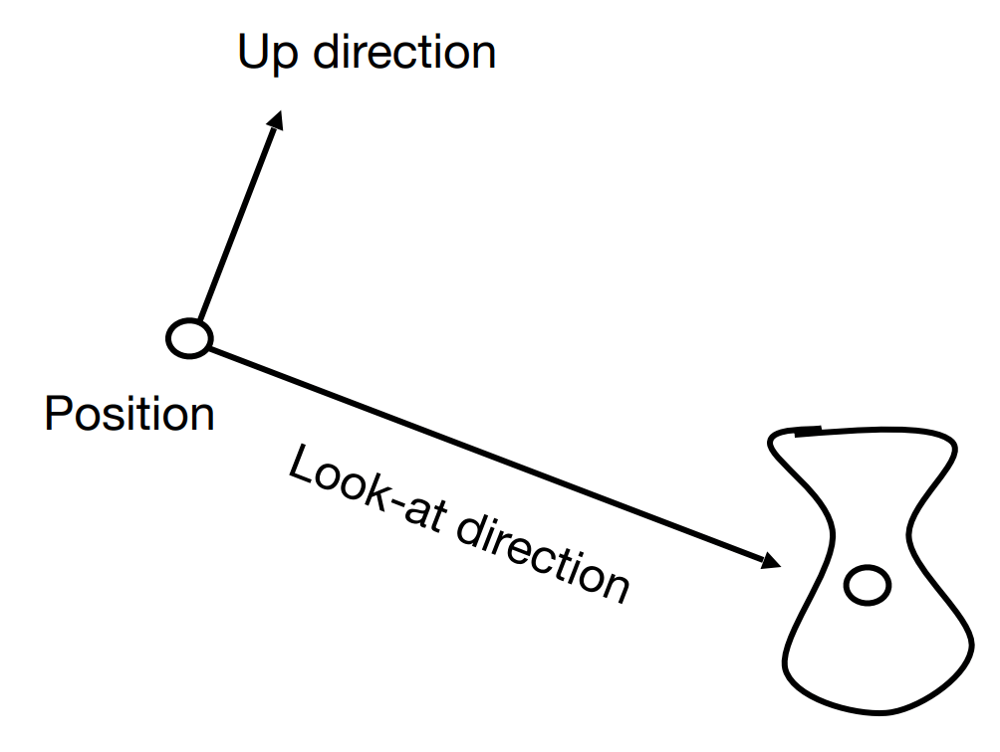
Key observation 重点观察
If the camera and all objects move together, the “photo” will be the same 如果相机和所有物体一起移动，“照片”将是相同的
How about that we always transform the camera to 不如我们总是把相机变成
The origin, up at Y Y Y − Z -Z − Z Y Y Y − Z -Z − Z
And transform the objects along with the camera 并随相机变换对象
Transform the camera by M v i e w M_{view} M v i e w
So it’s located at the origin, up at Y Y Y − Z -Z − Z Y Y Y − Z -Z − Z
M v i e w M_{view} M v i e w M v i e w = R v i e w T v i e w M_{view}=R_{view}T_{view} M v i e w = R v i e w T v i e w
Translates e e e
T v i e w = [ 1 0 0 − x e 0 1 0 − y e 0 0 1 − z e 0 0 0 1 ] T_{view}=\begin{bmatrix}1&0&0&-x_e\\0&1&0&-y_e\\0&0&1&-z_e\\0&0&0&1\end{bmatrix} T v i e w = ⎣ ⎢ ⎢ ⎡ 1 0 0 0 0 1 0 0 0 0 1 0 − x e − y e − z e 1 ⎦ ⎥ ⎥ ⎤
Rotates g g g − Z -Z − Z t t t Y Y Y g × t g \times t g × t X X X
Difficult to write! 将 g g g − Z -Z − Z t t t Y Y Y g × t g \times t g × t X X X
考虑求其逆变换
R v i e w − 1 = [ x g ^ × t ^ x t x − g 0 y g ^ × t ^ y t y − g 0 z g ^ × t ^ z t z − g 0 0 0 0 1 ] R_{view}^{-1}=\begin{bmatrix}x_{\hat{g}\times\hat{t}}&x_{t}&x_{-g}&0\\y_{\hat{g}\times\hat{t}}&y_{t}&y_{-g}&0\\z_{\hat{g}\times\hat{t}}&z_{t}&z_{-g}&0\\0&0&0&1\end{bmatrix} R v i e w − 1 = ⎣ ⎢ ⎢ ⎡ x g ^ × t ^ y g ^ × t ^ z g ^ × t ^ 0 x t y t z t 0 x − g y − g z − g 0 0 0 0 1 ⎦ ⎥ ⎥ ⎤
由于旋转矩阵是正交矩阵，其逆为它的转置，因此易求得 R v i e w R_{view} R v i e w
R v i e w = [ x g ^ × t ^ y g ^ × t ^ z g ^ × t ^ 0 x t y t z t 0 x − g y − g z − g 0 0 0 0 1 ] R_{view}=\begin{bmatrix}x_{\hat{g}\times\hat{t}}&y_{\hat{g}\times\hat{t}}&z_{\hat{g}\times\hat{t}}&0\\x_t&y_t&z_t&0\\x_{-g}&y_{-g}&z_{-g}&0\\0&0&0&1\end{bmatrix} R v i e w = ⎣ ⎢ ⎢ ⎡ x g ^ × t ^ x t x − g 0 y g ^ × t ^ y t y − g 0 z g ^ × t ^ z t z − g 0 0 0 0 1 ⎦ ⎥ ⎥ ⎤
Summary 总结
Transform objects together with the camera 与摄影机一起变换对象
Until camera’s at the origin, up at Y Y Y − Z -Z − Z Y Y Y − Z -Z − Z
Also known as ModelView Transformation 也称为 ModelView 变换
Projection Transformation 投影变换
Projection in Computer Graphics 投影在计算机图形学
3D to 2D
Orthographic projection 正交投影
Perspective projection 透视投影
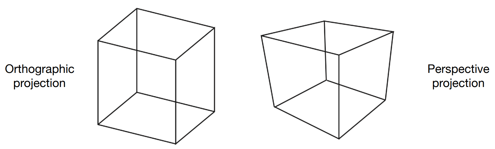
Orthographic Projection 正交投影
r , l , t , b , n , f r,l,t,b,n,f r , l , t , b , n , f
x x x [ l , r ] [l,r] [ l , r ]
y y y [ b , t ] [b,t] [ b , t ]
z z z [ f , n ] [f,n] [ f , n ]
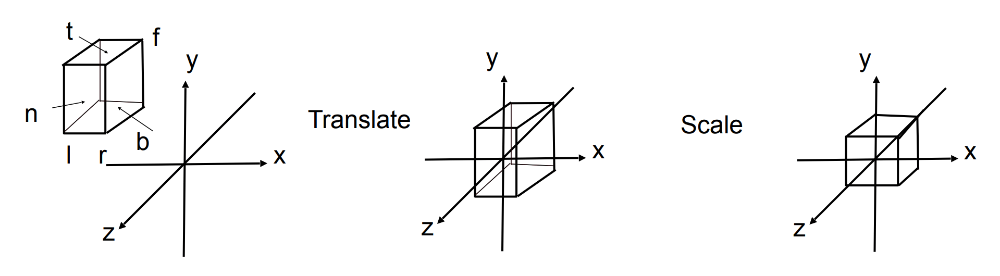
Transformation matrix?
Translate (center to origin) first, then scale (length/width/height to 2) 首先平移（中心到原点）然后缩放（长度/宽度/高度到 2）
M o r t h o = [ 2 r − l 0 0 0 0 2 t − b 0 0 0 0 2 n − f 0 0 0 0 1 ] [ 1 0 0 − r + l 2 0 1 0 − t + b 2 0 0 1 − n + f 2 0 0 0 1 ] M_{ortho}=\begin{bmatrix}\frac2{r-l}&0&0&0\\0&\frac2{t-b}&0&0\\0&0&\frac2{n-f}&0\\0&0&0&1\end{bmatrix}\begin{bmatrix}1&0&0&-\frac{r+l}2\\0&1&0&-\frac{t+b}2\\0&0&1&-\frac{n+f}2\\0&0&0&1\end{bmatrix} M o r t h o = ⎣ ⎢ ⎢ ⎡ r − l 2 0 0 0 0 t − b 2 0 0 0 0 n − f 2 0 0 0 0 1 ⎦ ⎥ ⎥ ⎤ ⎣ ⎢ ⎢ ⎡ 1 0 0 0 0 1 0 0 0 0 1 0 − 2 r + l − 2 t + b − 2 n + f 1 ⎦ ⎥ ⎥ ⎤
Caveat 警告
Looking at / along − Z -Z − Z n > f n > f n > f − Z -Z − Z n > f n>f n > f
n n n f f f ∣ f ∣ > ∣ n s ′ s ′ s ′ s ′ s ′ s ∣ |f|>|ns's's's's's| ∣ f ∣ > ∣ n s ′ s ′ s ′ s ′ s ′ s ∣
FYI: that’s why OpenGL (a Graphics API) uses left hand coords. 仅供参考：这就是 OpenGL（图形 API）使用左手坐标的原因。
Perspective Projection 透视投影
Most common in Computer Graphics, art, visual system 最常见于计算机图形学、艺术、视觉系统
Further objects are smaller 其他物体较小
Parallel lines not parallel; converge to single point 平行线不平行；收敛到单点
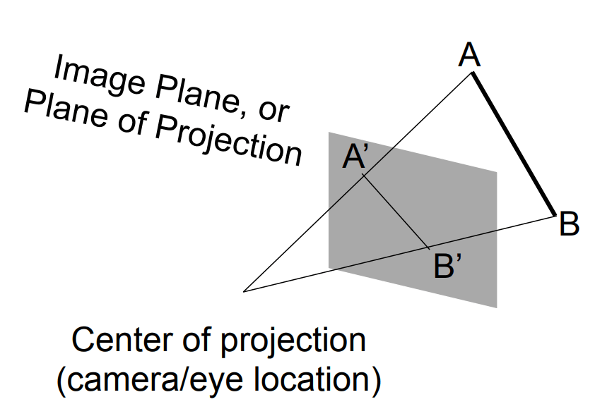
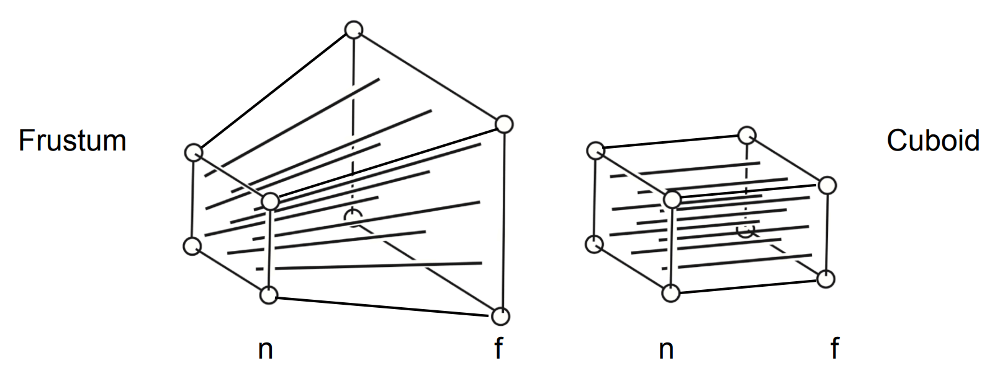
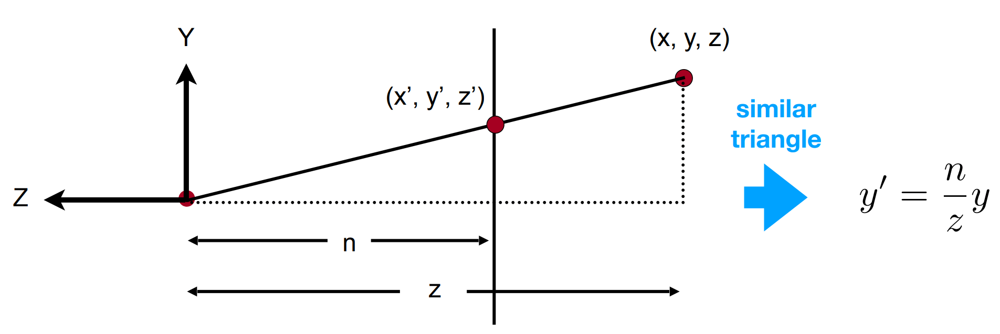
In homogeneous coordinates, 齐次坐标下，
( x y z 1 ) ⇒ ( n x / z n y / z u n k n o w n 1 ) = = ( n x n y s t i l l u n k n o w n z ) \begin{pmatrix}x\\y\\z\\1\end{pmatrix}\Rightarrow\begin{pmatrix}nx/z\\ny/z\\\text{unknown}\\1\end{pmatrix}==\begin{pmatrix}nx\\ny\\\text{still unknown}\\z\end{pmatrix} ⎝ ⎜ ⎜ ⎛ x y z 1 ⎠ ⎟ ⎟ ⎞ ⇒ ⎝ ⎜ ⎜ ⎛ n x / z n y / z u n k n o w n 1 ⎠ ⎟ ⎟ ⎞ = = ⎝ ⎜ ⎜ ⎛ n x n y s t i l l u n k n o w n z ⎠ ⎟ ⎟ ⎞
So the “squish” (persp to ortho) projection does this 所以“挤压”（透视到正交）投影可以做到这一点
M p e r s p → o r t h o ( 4 × 4 ) ( x y z 1 ) = ( n x n y u n k n o w n z ) M_{persp\to ortho}^{(4\times4)}\begin{pmatrix}x\\y\\z\\1\end{pmatrix}=\begin{pmatrix}nx\\ny\\\text{unknown}\\z\end{pmatrix} M p e r s p → o r t h o ( 4 × 4 ) ⎝ ⎜ ⎜ ⎛ x y z 1 ⎠ ⎟ ⎟ ⎞ = ⎝ ⎜ ⎜ ⎛ n x n y u n k n o w n z ⎠ ⎟ ⎟ ⎞
Already good enough to figure out part of M p e r s p → o r t h o M_{persp\to ortho} M p e r s p → o r t h o M p e r s p → o r t h o M_{persp\to ortho} M p e r s p → o r t h o
M p e r s p → o r t h o = ( n 0 0 0 0 n 0 0 ? ? ? ? 0 0 1 0 ) M_{persp\to ortho}=\begin{pmatrix}n&0&0&0\\0&n&0&0\\?&?&?&?\\0&0&1&0\end{pmatrix} M p e r s p → o r t h o = ⎝ ⎜ ⎜ ⎛ n 0 ? 0 0 n ? 0 0 0 ? 1 0 0 ? 0 ⎠ ⎟ ⎟ ⎞
Observation: the third row is responsible for z’ 观察：第三排负责 z’
Any point on the near plane will not change 近平面上的任何点都不会改变
M_{persp\to ortho}^{(4\times4)}\begin{pmatrix}x\\y\\z\\1\end{pmatrix}=\begin{pmatrix}nx\\ny\\\text{unknown}\\z\end{pmatrix}\overset{\text{replace z with n}}{\operatorname*{\to}}\begin{pmatrix}x\\y\\n\\1\end{pmatrix}\Rightarrow\begin{pmatrix}x\\y\\n\\1\end{pmatrix}==\begin{pmatrix}nx\\ny\\n^2\\n\end{pmatrix}
So the third row must be of the form ( 0 0 A B ) (0\ 0\ A\ B) ( 0 0 A B ) ( 0 0 A B ) (0\ 0\ A\ B) ( 0 0 A B )
( 0 0 A B ) ( x y n 1 ) = n 2 \begin{pmatrix}0&0&A&B\end{pmatrix}\begin{pmatrix}x\\y\\n\\1\end{pmatrix}=n^2 ( 0 0 A B ) ⎝ ⎜ ⎜ ⎛ x y n 1 ⎠ ⎟ ⎟ ⎞ = n 2
What do we have now?
( 0 0 A B ) ( x y n 1 ) = n 2 → A n + B = n 2 \begin{pmatrix}0&0&A&B\end{pmatrix}\begin{pmatrix}x\\y\\n\\1\end{pmatrix}=n^2\to An+B=n^2 ( 0 0 A B ) ⎝ ⎜ ⎜ ⎛ x y n 1 ⎠ ⎟ ⎟ ⎞ = n 2 → A n + B = n 2
Any point’s z on the far plane will not change 近平面上的任何点都不会改变
( 0 0 f 1 ) ⇒ ( 0 0 f 1 ) = = ( 0 0 f 2 f ) → A f + B = f 2 \begin{pmatrix}0\\0\\f\\1\end{pmatrix}\Rightarrow\begin{pmatrix}0\\0\\f\\1\end{pmatrix}==\begin{pmatrix}0\\0\\f^2\\f\end{pmatrix}\quad\to\quad Af+B=f^2 ⎝ ⎜ ⎜ ⎛ 0 0 f 1 ⎠ ⎟ ⎟ ⎞ ⇒ ⎝ ⎜ ⎜ ⎛ 0 0 f 1 ⎠ ⎟ ⎟ ⎞ = = ⎝ ⎜ ⎜ ⎛ 0 0 f 2 f ⎠ ⎟ ⎟ ⎞ → A f + B = f 2
Solve for A A A B B B
A n + B = n 2 A f + B = f 2 → A = n + f B = − n f \begin{aligned}An+B&=n^2\\Af+B&=f^2\end{aligned}\quad\to\quad\begin{aligned}A&=n+f\\B&=-nf\end{aligned} A n + B A f + B = n 2 = f 2 → A B = n + f = − n f
Finally, every entry in M p e r s p → o r t h o M_{persp\to ortho} M p e r s p → o r t h o
What’s next?
完成正交投影（M o r t h o M_{ortho} M o r t h o
M p e r s p = M o r t h o M p e r s p → o r t h o \begin{aligned}M_{persp}=M_{ortho}M_{persp\to ortho}\end{aligned} M p e r s p = M o r t h o M p e r s p → o r t h o
HW0
环境配置
WSL2 下：
1 2 sudo apt-get install xfce4-terminal
配置环境变量：
1 echo "export DISPLAY=localhost:0">> ~/.bashrc
MobaXterm 下配置 wsl2：
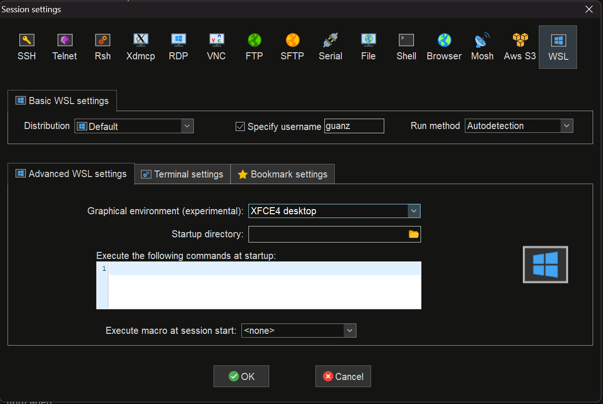
开跑！
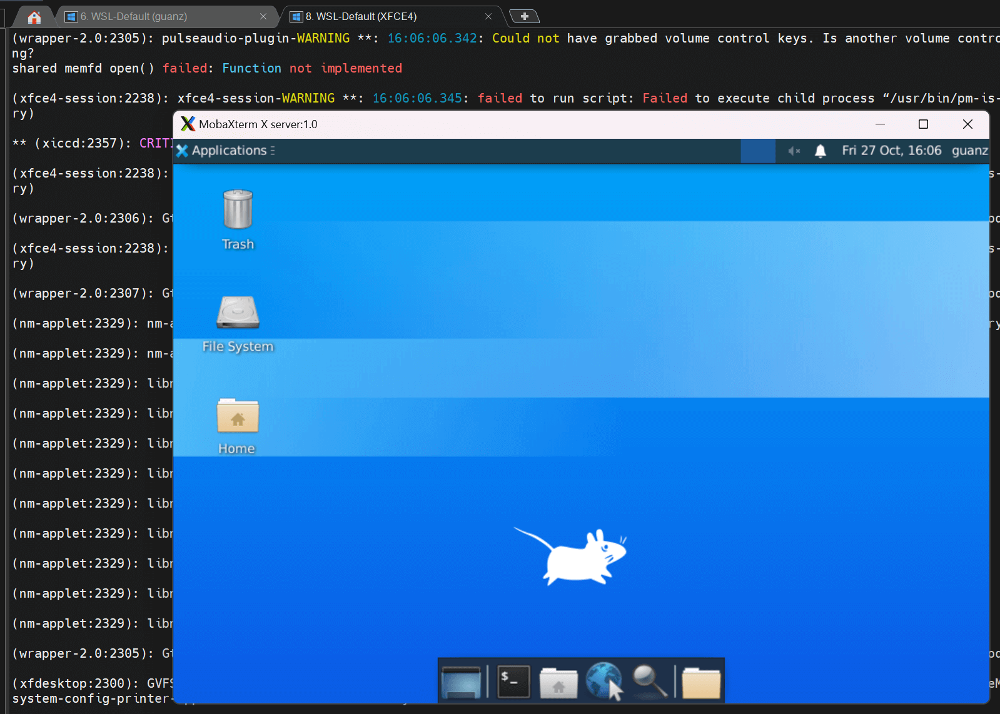
安装库：
1 2 3 4 sudo apt update
Windows 下的 VSCode，安装 wsl 插件，点击左下角，连接 wsl。
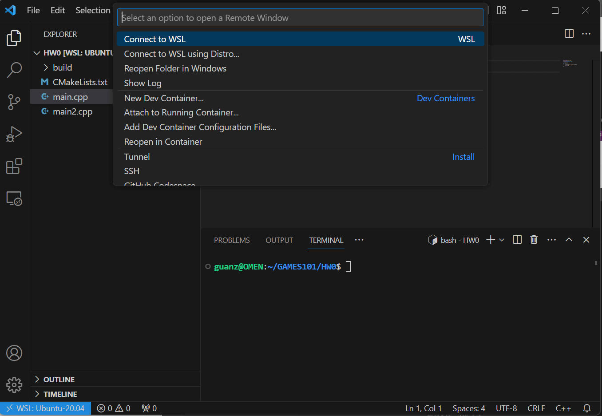
打开作业模板，有如下命令：
mkdir build: 创建名为 build 的文件夹。cd build: 移动到 build 文件夹下。cmake ..: 注意其中 ’…’ 表示上一级目录，若为 ’.’ 则表示当前目录。make: 编译程序，错误提示会显示在终端中。./Transformation：若上一步无错误，则可运行程序（这里 Transformation 为可执行文件名，可参照 CMakeLists.txt 中修改)。
写一个 compile.sh 便于编译：
1 2 3 4 5 6 7 rm -rf buildmkdir buildcd buildcd ../
修改权限：
开跑！
作业
写一个用于的 sh：
1 2 3 4 5 6 rm -rf buildmkdir buildcd buildcd ../
示例代码
1 2 3 4 5 6 7 8 9 10 11 12 13 14 15 16 17 18 19 20 21 22 23 24 25 26 27 28 29 30 31 32 33 34 35 36 37 38 39 40 41 42 43 44 45 46 47 48 #include <cmath> #include <eigen3/Eigen/Core> #include <eigen3/Eigen/Dense> #include <iostream> int main () "Example of cpp \n" ;float a = 1.0 , b = 2.0 ;sqrt (b) << std::endl;acos (-1 ) << std::endl;sin (30.0 /180.0 *acos (-1 )) << std::endl;"Example of vector \n" ;Eigen::Vector3f v (1.0f ,2.0f ,3.0f ) ;Eigen::Vector3f w (1.0f ,0.0f ,0.0f ) ;"Example of output \n" ;"Example of add \n" ;"Example of scalar multiply \n" ;3.0f << std::endl;2.0f * v << std::endl;"Example of matrix \n" ;1.0 , 2.0 , 3.0 , 4.0 , 5.0 , 6.0 , 7.0 , 8.0 , 9.0 ;2.0 , 3.0 , 1.0 , 4.0 , 6.0 , 5.0 , 9.0 , 7.0 , 8.0 ;"Example of output \n" ;return 0 ;
题目
给定一个点 P = ( 2 , 1 ) P=(2,1) P = ( 2 , 1 ) 4 5 ∘ 45^\circ 4 5 ∘ ( 1 , 2 ) (1,2) ( 1 , 2 )
P P P ( 2 , 1 , 1 ) T (2, 1, 1)^T ( 2 , 1 , 1 ) T
旋转矩阵为 R ( π / 4 ) = [ cos π / 4 − sin π / 4 0 sin π / 4 cos π / 4 0 0 0 1 ] R(\pi/4)=\begin{bmatrix}\cos \pi/4 & -\sin \pi/4 & 0 \\\sin \pi/4 & \cos \pi/4 & 0 \\0 & 0 & 1 \end{bmatrix} R ( π / 4 ) = ⎣ ⎡ cos π / 4 sin π / 4 0 − sin π / 4 cos π / 4 0 0 0 1 ⎦ ⎤
平移矩阵 T ( 1 , 2 ) = [ 1 0 1 0 1 2 0 0 1 ] T(1, 2)=\begin{bmatrix}1 & 0 & 1 \\0 & 1 & 2 \\0 & 0 & 1\end{bmatrix} T ( 1 , 2 ) = ⎣ ⎡ 1 0 0 0 1 0 1 2 1 ⎦ ⎤
最终坐标为 T R P TRP T R P
1 2 3 4 5 6 7 8 9 10 11 12 13 14 15 16 17 18 19 20 21 22 23 24 #include <cmath> #include <eigen3/Eigen/Core> #include <eigen3/Eigen/Dense> #include <iostream> #define PI 3.1415926535 using namespace std;using namespace Eigen;int main () float theta = PI / 4.0f ;Vector3f P (2.0f , 1.0f , 1.0f ) ;cos (theta), -sin (theta), 0 ,sin (theta), cos (theta), 0 ,0 , 0 , 1 ;1 , 0 , 1 ,0 , 1 , 2 ,0 , 0 , 1 ;return 0 ;
HW1
本次作业的任务是填写一个旋转矩阵和一个透视投影矩阵。给定三维下三个点 v_0(2.0, 0.0,−2.0), v_1(0.0, 2.0,−2.0), v_2(−2.0, 0.0,−2.0), 你需要将这三个点的坐标变换为屏幕坐标并在屏幕上绘制出对应的线框三角形(在代码框架中，我们已经提供了draw_triangle 函数，所以你只需要去构建变换矩阵即可)。
get_model_matrix(float rotation_angle): 逐个元素地构建模型变换矩阵并返回该矩阵。
代公式：$$\mathbf{R}_z(\alpha)=\begin{pmatrix}\cos\alpha&-\sin\alpha&0&0\\sin\alpha&\cos\alpha&0&0\0&0&1&0\0&0&0&1\end{pmatrix}$$
1 2 3 4 5 6 7 8 9 10 11 12 13 14 15 16 17 18 Eigen::Matrix4f get_model_matrix (float rotation_angle) Identity ();float angle = rotation_angle * MY_PI / 180.0f ;cos (angle), -std::sin (angle), 0 , 0 ,sin (angle), std::cos (angle), 0 , 0 ,0 , 0 , 1 , 0 ,0 , 0 , 0 , 1 ;return model;
get_projection_matrix(float eye_fov, float aspect_ratio, float zNear, float zFar): 使用给定的参数逐个元素地构建透视投影矩阵并返回该矩阵。
代公式：M p e r s p = M o r t h o M p e r s p → o r t h o \begin{aligned}M_{persp}=M_{ortho}M_{persp\to ortho}\end{aligned} M p e r s p = M o r t h o M p e r s p → o r t h o
其中：
M p e r s p → o r t h o M_{persp\to ortho} M p e r s p → o r t h o
M p e r s p → o r t h o = [ z N e a r 0 0 0 0 z N e a r 0 0 0 0 z N e a r + z F a r − z N e a r × z F a r 0 0 1 0 ] M_{persp\to ortho}=\begin{bmatrix}\mathrm{zNear}&0&0&0\\0&\mathrm{zNear}&0&0\\0&0&\mathrm{zNear}+\mathrm{zFar}&-\mathrm{zNear}\times\mathrm{zFar}\\0&0&1&0\end{bmatrix} M p e r s p → o r t h o = ⎣ ⎢ ⎢ ⎡ z N e a r 0 0 0 0 z N e a r 0 0 0 0 z N e a r + z F a r 1 0 0 − z N e a r × z F a r 0 ⎦ ⎥ ⎥ ⎤
M o r t h o = [ 2 r − l 0 0 0 0 2 t − b 0 0 0 0 2 n − f 0 0 0 0 1 ] [ 1 0 0 − r + l 2 0 1 0 − t + b 2 0 0 1 − n + f 2 0 0 0 1 ] M_{ortho}=\begin{bmatrix}\frac2{r-l}&0&0&0\\0&\frac2{t-b}&0&0\\0&0&\frac2{n-f}&0\\0&0&0&1\end{bmatrix}\begin{bmatrix}1&0&0&-\frac{r+l}2\\0&1&0&-\frac{t+b}2\\0&0&1&-\frac{n+f}2\\0&0&0&1\end{bmatrix} M o r t h o = ⎣ ⎢ ⎢ ⎡ r − l 2 0 0 0 0 t − b 2 0 0 0 0 n − f 2 0 0 0 0 1 ⎦ ⎥ ⎥ ⎤ ⎣ ⎢ ⎢ ⎡ 1 0 0 0 0 1 0 0 0 0 1 0 − 2 r + l − 2 t + b − 2 n + f 1 ⎦ ⎥ ⎥ ⎤
具体地，如上图，zNear 即为 n n n z z z y z = tan ( e y e _ f o v / 2 ) \frac yz=\tan{(\mathrm{eye\_fov}/2)} z y = tan ( e y e _ f o v / 2 )
由于右手坐标系 n n n f f f
1 2 3 4 5 6 7 float angle = eye_fov * MY_PI / 180.0f ;float n = -zNear;float f = -zFar;float t = std::tan (angle / 2 ) * n;float b = -t;float r = t * aspect_ratio;float l = -r;
最后 M p e r s p = M o r t h o M p e r s p → o r t h o \begin{aligned}M_{persp}=M_{ortho}M_{persp\to ortho}\end{aligned} M p e r s p = M o r t h o M p e r s p → o r t h o
完整代码：
1 2 3 4 5 6 7 8 9 10 11 12 13 14 15 16 17 18 19 20 21 22 23 24 25 26 27 28 29 30 31 32 33 34 35 36 37 38 39 40 Eigen::Matrix4f get_projection_matrix (float eye_fov, float aspect_ratio, float zNear, float zFar) Identity ();0 , 0 , 0 ,0 , zNear, 0 , 0 ,0 , 0 , zNear + zFar, -(zNear * zFar),0 , 0 , 1 , 0 ;float angle = eye_fov * MY_PI / 180.0f ;float n = -zNear;float f = -zFar;float t = std::tan (angle / 2 ) * n;float b = -t;float r = t * aspect_ratio;float l = -r;1 , 0 , 0 , -(r + l) / 2 ,0 , 1 , 0 , -(t + b) / 2 ,0 , 0 , 1 , -(n + f) / 2 ,0 , 0 , 0 , 1 ;2 / (r - l), 0 , 0 , 0 ,0 , 2 / (t - b), 0 , 0 ,0 , 0 , 2 / (f - n), 0 ,0 , 0 , 0 , 1 ;return projection;
运行时：
n = -0.1
f = -50
t = -0.0414214
b = 0.0414214
r = -0.0414214
l = 0.0414214
提高项：在 main.cpp 中构造一个函数，该函数的作用是得到绕任意
过原点的轴的旋转变换矩阵。Eigen::Matrix4f get_rotation(Vector3f axis, float angle)
代公式：$$\mathbf{R}(\mathbf{n},\alpha)=\cos(\alpha)\mathbf{I}+(1-\cos(\alpha))\mathbf{n}\mathbf{n}^T+\sin(\alpha)\underbrace{\begin{pmatrix}0&-n_z&n_y\n_z&0&-n_x\-n_y&n_x&0\end{pmatrix}}_{\mathbf{N}}$$
1 2 3 4 5 6 7 8 9 10 11 12 13 14 15 16 17 18 19 20 Eigen::Matrix4f get_rotation (Vector3f axis, float angle) Identity ();float alpha = angle * MY_PI / 180.0f ;float nx = axis[0 ];float ny = axis[1 ];float nz = axis[2 ];0 , -nz, ny,0 , -nx,0 ;cos (alpha) * Eigen::Matrix3f::Identity () + (1 - std::cos (alpha)) * axis * axis.transpose () + std::sin (alpha) * M;Identity ();block <3 , 3 >(0 , 0 ) = R;return model;